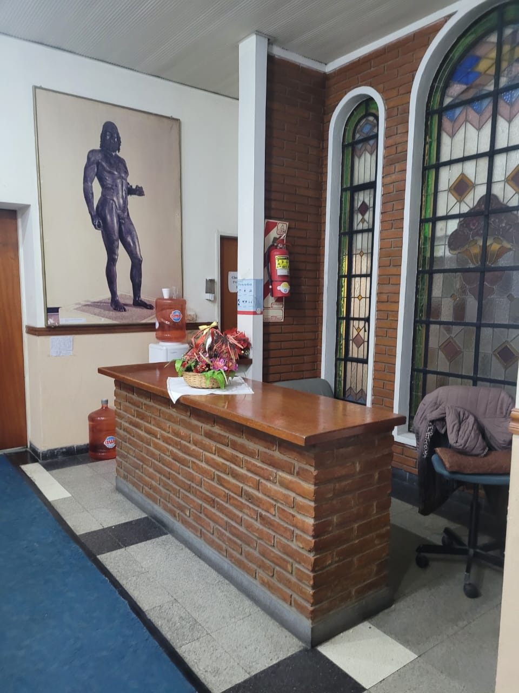
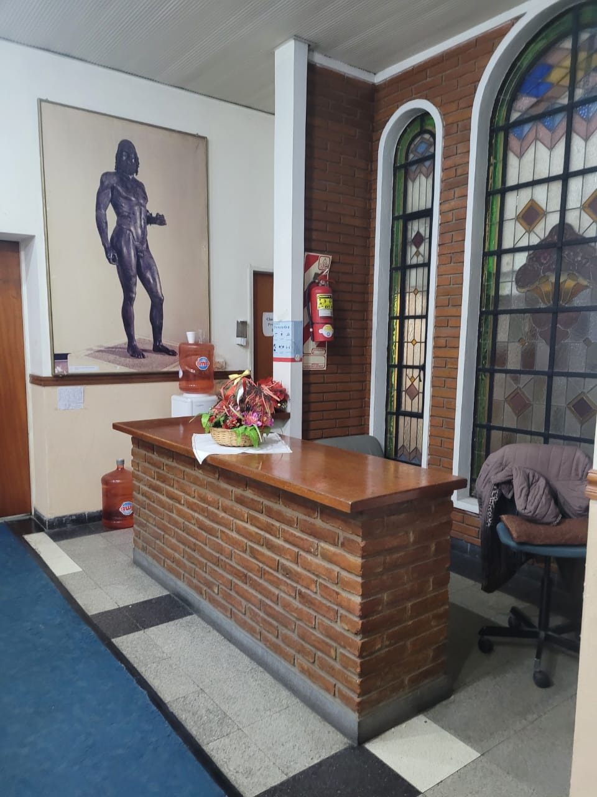

Quiénes Somos
La Asociación Calabresa nació del sueño de aquellos italianos que llegaron a Argentina desde la hermosa región de Calabria, Italia. Con el anhelo de preservar sus raíces y tradiciones, nuestros fundadores buscaron crear un espacio donde pudieran trabajar, enseñar sobre su rica cultura y mantener viva la llama de sus orígenes.
Este lugar se convirtió en un punto de encuentro para las familias calabresas, donde podían reunirse, compartir sus experiencias y fomentar su cultura ancestral. A través de los años, la asociación ha servido como un puente entre dos mundos, permitiendo que las nuevas generaciones conozcan y valoren sus raíces, mientras que los más veteranos encuentran consuelo y alegría al mantener viva la conexión con su tierra natal, tan distante físicamente pero siempre presente en sus corazones.

 
